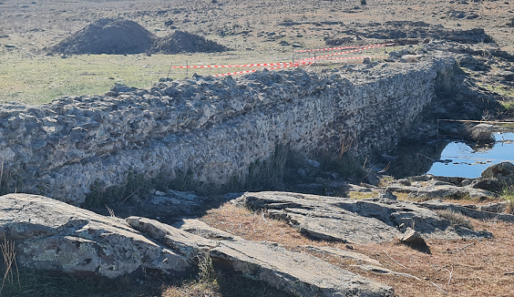
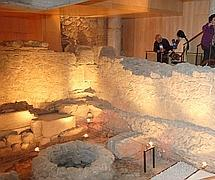
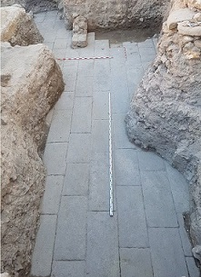
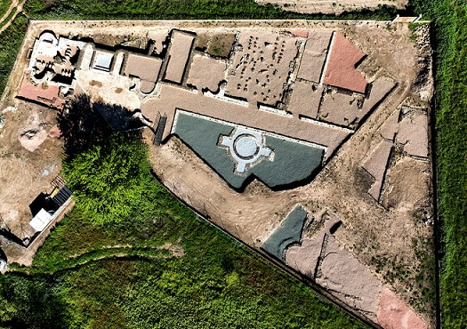

TOLEDO ROMANO
- En Mazarambroz se localizan los restos de la presa romana de La Alcantarilla, datada en el siglo I. Era la antigua ciudad romana de "Menterosa".
- Toledo
- Alcázar de San Juan. Se conservan los restos de los mosaicos romanos hallados en 1952, actualmente expuestos en el Museo Fray Juan Cobos de la propia localidad. Los motivos decorativos son peltas y rectángulos, motivos florales, hojas de acanto, tallos, cuadrados y flores de loto, orlas, rombos y hexágonos.
- En San Martín de Montalbán el puente romano de la Canasta. En la calzada romana que unía Navalmoralejo y Toledo. Se conservan tres con arcos de medio punto, sobre el cañón que forma el río Torcón.
- La presa romana de Moracantá, ubicada en el término municipal de Villaminaya. De época altoimperial con 40m de longitud y una altura máxima de dos metros. Destaca el mortero con abundante cal, 'opus caementicium'. Foto: cultura.castillalamancha.es

Ver: Presas romanas
- En el término municipal de San Pablo de los Montes se localizan las antiguas minas romanas de hierro que datan del siglo II a.e.c.
- En agosto 2022, las excavaciones que se realizan este verano en el municipio toledano de Rielves han sacado a la luz uno de los mosaicos que permanecían ocultos en el yacimiento de “El Solado”, una villa romana datada en el siglo IV. Representa dibujos geométricos de diferentes colores y está formado con teselas de muy pequeño tamaño. “Es un mosaico de gran calidad artística, lo que nos lleva a pensar que el propietario de la finca era un ciudadano rico”. “El Solado” se encuentra en la ruta de Alcalá de Henares a Mérida. Las primeras noticias de “El Solado” se tienen en el siglo XVIII, cuando el rey Carlos III financió en 1780 una campaña para descubrir los restos arqueológicos de la villa. Pero posteriormente se volvieron a enterrar.
- El puente romano de La Iglesuela y Sartajada. En La Iglesuela hay cuatro pozos de agua romanos y otros cinco en los alrededores. También destaca su puente medieval.
- Los famosos Verracos de la población de Castillo de Bayuela, son tres esculturas ibéricas de piedra que muestran un toro, un verraco y una guarra.
- El Cerrón, yacimiento arqueológico situado en el término municipal de la localidad de Illescas, en el que se han hallado importantes restos de la Edad del Hierro. Estuvo habitado desde finales del siglo V al siglo II a.e.c.. Entre los hallazgos más significativos se encuentra el famoso Relieve de los Aurigas.
- Talavera de la Reina. Poblada desde la prehistoria. Talavera era una urbe prospera de finales del siglo I a.e.c. con el nombre de Caesaróbriga. En el año 74 Caesaróbriga adquirió la categoría de municipio. La ciudad cuenta con el mayor corpus de epigrafía latina de la provincia. Destacan los descubrimientos arqueológicos al sur de la ciudad donde han aparecido restos de termas y un Hércules en bronce datado en torno al siglo III. Desde abril de 2010 son accesibles al público los restos arqueológicos del centro cultural «Rafael Morales» que incluyen una casa, parte de dos templos y diversos objetos de varias épocas.

En octubre de 2018, en el solar del futuro Palacio de
Justicia, se han encontrado restos romanos del siglo I. Se ha descubierto una
pavimentación del suelo con sillares regulares. Se cree que podrían pertenecer
al foro de la ciudad romana de Talavera, “ya que por la actual calle Adalid
Meneses pasaba el Cardo Máximo que iba desde la Puerta de Mérida hasta la Puerta
del Río”.
En Mayo de 2019 hallan restos del Foro Romano de Caesaróbriga en las
excavaciones de la ampliación de los Juzgados de Talavera. Los restos
encontrados conforman un enlosado de 13 metros de largo y tienen una anchura
máxima de 9 metros, se encuentran muy bien conservados y se prolongan bajo
tierra.
Foto: lavozdetalaverra.com

De época romana en Talavera podemos visitar: Las Domus romanas, un conjunto de viviendas y dos pequeños templos dedicados a Júpiter y Tito Flavio Vespasiano. Fueron descubiertos bajo la plaza del Pan y que puedes visitar en el Hospital de la Misericordia. El Puente más antiguo de Talavera, tiene un origen romano, si bien la mayor parte de los restos imperiales están en su entrada y bajo el agua, ya que posteriormente se reconstruyó con otro trazado en la edad media. En la la entrada de la Basílica podemos ver la Lápida de Litorio. La Muralla de origen celta y romano, La Estatua de Hércules, el Foro romano...
- La villa romana de El Saucedo se localiza en las
inmediaciones de Talavera la Nueva, junto al arroyo Baladies.
Las noticias sobre hallazgos realizados en el entorno del yacimiento se remontan
al siglo XVI; se hallaron monedas, cerámicas y algunos mármoles.
La villa data de la 2ª mitad del siglo I hasta el siglo VIII, pudiéndose
dividir en tres fases claramente diferenciadas:
La primera fase, desde el siglo I, se documenta en la zona la existencia de
“villae” dedicadas a la explotación de las tierras de la zona aluvial. Tan sólo
se han podido documentar algunas monedas y diversas piezas cerámicas, datadas
entre la segunda mitad del siglo I y el último cuarto del siglo II.
La segunda fase, a finales del siglo III-principios del siglo IV, es cuando se
edificó en El Saucedo una villa palaciega. El área residencial (la única
documentada por el momento) se articula en torno a un patio central con una gran
fuente ornamental, rodeado por una galería porticada.
Entre las estancias que configuran la “pars urbana”, destacan las destinadas a
las termas privadas. En el Saucedo podemos contemplar dos complejos termales.
También destaca el “oecus” o sala de recepciones, situada en la parte principal
de la casa.
En la tercera fase, a finales del siglo V, y a comienzos del VI, el salón
distribuidor de las termas fue remodelado para convertirlo en una basílica de
culto cristiano con una piscina bautismal de inmersión.
Finalmente, a principios del siglo VIII, el edificio sufrió un importante
incendio que destruyó toda la zona de almacenes; tras lo cual fue abandonado
definitivamente. Foto: cultura.castillalamancha.es

- En La Pueblanueva, en la pedanía de Las Vegas de San Antonio, se localiza El Mausoleo romano de Las Vegas. Data del siglo IV, de época de Teodosio. El Mausoleo constaba de una Cripta donde se encontraron dos sarcófagos de piedra, y otro monumental de mármol, conocido como "Sarcófago de los Apóstoles”. Foto: Sergio Aguiar